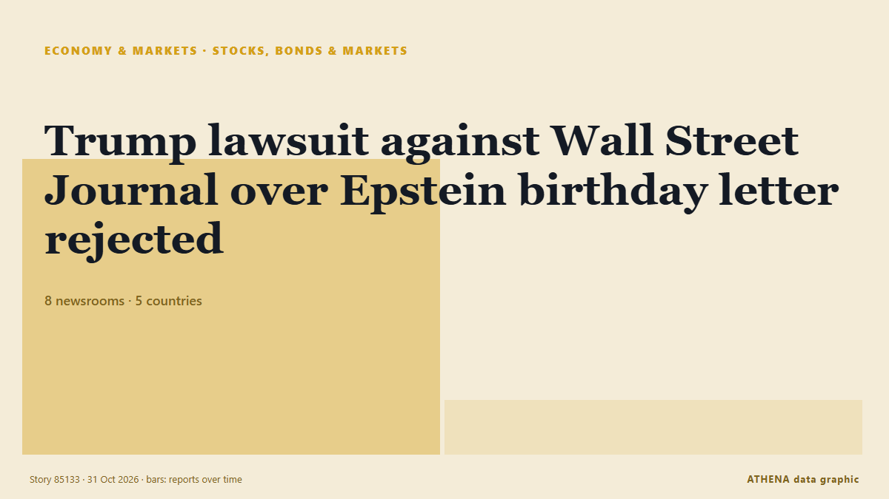

Actions, obligations et marchés
| 18 oct. | 0 |
|---|---|
| 19 oct. | 0 |
| 20 oct. | 1 |
| 21 oct. | 1 |
| 22 oct. | 2 |
| 23 oct. | 1 |
| 24 oct. | 0 |
| 25 oct. | 0 |
| 26 oct. | 2 |
| 27 oct. | 1 |
| 28 oct. | 5 |
| 29 oct. | 2 |
| 30 oct. | 7 |
| 31 oct. | 2 |
Les titres sont affichés en anglais, tels que publiés.

Trump lawsuit against Wall Street Journal over Epstein birthday letter rejected
A federal judge has thrown out Donald Trump’s multibillion-dollar lawsuit against the Wall Street Journal and media mogul Rupert Murdoch over a story ... de Irish Examiner
France faces long-term debt risks despite no immediate crisis, Eurobank says
France is not facing an immediate risk of a public debt crisis comparable to the eurozone turmoil of the 2010s, but persistent deficits, weak economic growth and rising borrowing costs pose… de Cyprus Mail
US Treasury extends Serbian oil firm NIS operating license until December 11 — TV
NIS submitted an extension request to OFAC for its current operating license on October 24. de TASS (English)
Dakar Rally 2027 will be held in Portugal and Morocco, say organisers
The Dakar Rally was moved from Saudi Arabia to Portugal and Morocco over security concerns stemming from Houthi attacks and the war in the Middle East. de Free Malaysia Today
Congress approves supplementary credit to address El Niño and other urgent needs
The plenary of the Congress of the Republic approved the Executive branch’s legislative proposal to access supplementary credits. de Andina (English)
Jio’s blockbuster debut puts valuation, earnings in focus
India’s second-most valuable listed company now needs to show investors the money. de The Business Times
Microsoft Up, Google Down. A Tale of Two Hyperscalers.
Investors are showing little patience for lavish spending and meager returns on companies’ artificial intelligence bets. de New York Times Business
McCullum backs Brook's captaincy after England's tri-series flop
Coach targets improvement after narrow Pakistan defeat as World Cup looms. de Express Tribune
Sonia Gandhi makes Instagram debut, shares first look of upcoming memoir ‘Belonging: A Journey Of Love’
In her first post, Sonia Gandhi described the memoir as a story of “love, duty, loss and finding a place to belong” de Hindustan Times
Stock Market Crash, Sensex Today: Sensex Closes 450 Points Lower Amid Mixed Global Cues, Oil Price Rise
Stock Market, Sensex, Share Market, Nifty Crash: Brent crude tops $110 as fresh attacks in Saudi Arabia raise concerns over oil supplies. de NDTV
Seoul stocks open lower on Wall Street losses, AI concerns
South Korean stocks opened lower Friday, tracking overnight losses on Wall Street, as renewed concerns over the sustainability of the artificial intelligence (AI) boom weighed on investor sentiment. de Korea Herald
‘They are trying to intimidate us’: Indonesia’s Prabowo remains defiant in the face of an MSCI double downgrade
MSCI's proposal to reclassify Indonesia as a "standalone" market triggered a stock rout and a presidential outburst. de Fortune
Dangote Refinery’s IPO closes with investors from 120 countries
"This is a historic achievement for Africa. de Vanguard
Investors Brace for Big Tech’s A.I. Spending Bill
Tech stocks have rebounded before pivotal earnings reports from artificial intelligence hyperscalers like Google and Microsoft. de New York Times Business
Mukesh Ambani gets teary-eyed as children talk about Reliance's journey at Jio listing
Dubai: Reliance Industries Chairman Mukesh Ambani was visibly emotional as his children, Isha Ambani and Anant Ambani, delivered heartfelt speeches at the Jio Platforms listing ceremony at the… de Gulf News
Election uncertainty rocks markets as Tel Aviv stocks tumble and shekel reverses gains
The TA-35 and TA-125 plunged as election uncertainty erased earlier optimism, while the shekel weakened and government bond yields climbed. de The Jerusalem Post
Ambani's Jio to make Mumbai trading debut after record $3.2 billion India IPO
Low-cost broadband provider Jio Platforms aims for £81bn valuation when it floats on the stock market on Wednesday India’s second-richest man, Mukesh Ambani, is launching what could be the country’s… de The Guardian
AI, semiconductors drive foreign investor gains, weakening Taiwan dollar
Taiwan's AI and semiconductor stocks have delivered substantial gains for foreign investors, who have recently taken profits, converted the proceeds into US dollars, and repatriated them, driving the… de DigiTimes Asia